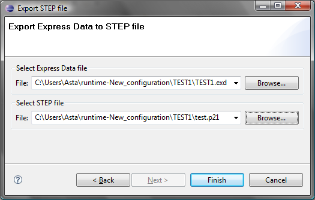

Figure 1. Export to STEP wizard
dialogue
- Select Express Data file
- locate a path to the EXPRESS dictionary file (.exd extension) by using Browse button.
- Select STEP file -
locate a path to the destination STEP file by using Browse button.
- Press Finish button.
The generated STEP file appears in the specified location.